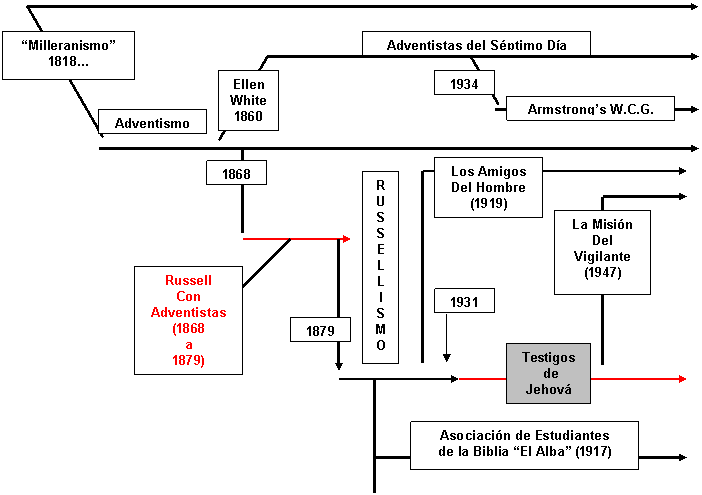

<< Anexo 1 | Índice | Anexo 3 »
Tomando como base la investigación del ex testigo de Jehová, David Reed 1 construyó el siguiente diagrama para determinar los orígenes sectarios de la WT que, por cierto, proviene de la “cristiandad”. Este término es importante ya que, en su propaganda, constantemente llaman “cristiandad” a todos los que se autonombran cristianos que no sean de la secta aludida. “Cristianos” solamente lo son ellos: nadie más. El resto pertenece a la “cristiandad”. La WT da otros datos: REFORMA -> CALVINISMO (no es casual su intolerancia discriminatoria) -> presbiterianismo -> CONGREGACIONALISMO-> ADVENTISMO -> RUSSELLISMO. Ver fuente al final 2. Sea como sea, el origen de los TJ es de: secta, que proviene de otra secta, que proviene de otra secta, que proviene de otra secta, etc…, dando “vida” a su vez, a nuevas sectas.
Con leves añadidos de mi parte sobre los de Reed, presento el siguiente esquema:
- 1
-
Reed, David; “Comments from the Friends”; Spring 1992; p. 3.
- 2
-
Franz, F.W.; “El Hombre en busca de Dios”; Watch Tower Bible and Tract Society of Pennsylvania; 1992; p. 327. Y: “Los Testigos de Jehová, proclamadores del Reino de Dios”; Watch Tower Bible and Tract Society of Pennsylvania; 1993; Grupo Editorial Ultramar, S.A. de C.V.; pp. 42-43.
Comentarios
Comments powered by Disqus